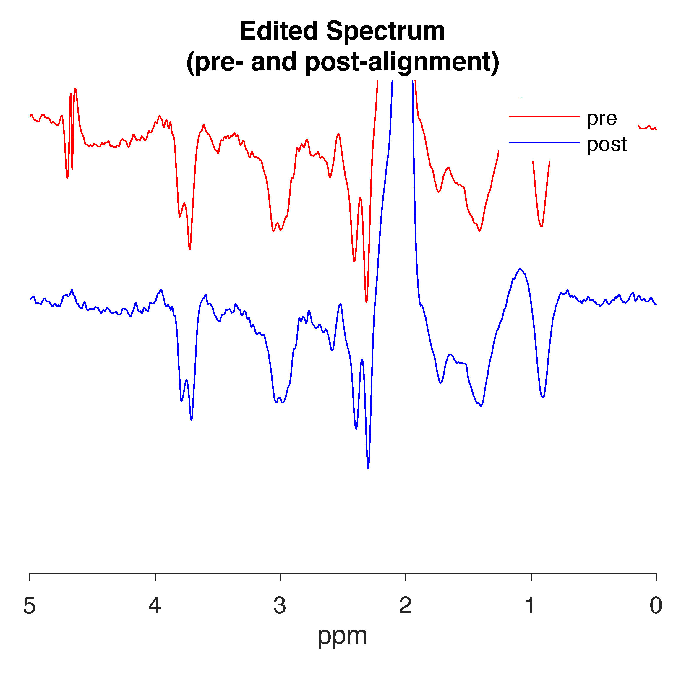

When
encountering an error or bug in Gannet, please first check you are using
the latest
version.
It may be that your issue has already been addressed.
If your issue has not been addressed or is not found in this FAQ,
please report the issue to us on
GitHub
or the
MRSHub
Forum.
General
1. Can Gannet process non-edited
data?
No, Gannet is designed to process edited single-voxel data only.
However, the standalone tool CoRegStandAlone
can be used with non-edited single-voxel data to co-register voxels to
structural images and segment the images to obtain voxel tissue
fractions.
2. Can Gannet process MRSI
data?
No.
3. Can Gannet process GSH-edited
data?
Yes, Gannet can process GABA-, GSH-, Lac-, and EtOH-edited MEGA-PRESS
data, as well as GABA-/GSH-, Lac-/GSH-, and EtOH-/GABA-/GSH-edited
HERMES and HERCULES data. (Fitting of HERCULES phantom data is not
supported, however.) Simply set the appropriate target
option(s) in GannetPreInitialise.m.
4. Can Gannet process HERMES/HERCULES
data?
GannetLoad.m can load and preprocess HERMES and HERCULES
data, but only HERMES data can be modeled in GannetFit.m.
HERCULES data can be fully processed and fitted using the
Osprey
software package.
5. Can Gannet process phantom
data?
Yes, Gannet can process and fit phantom edited data as described
above. Make sure to set phantom to 1 under
Flags in GannetPreInitialise.m. If you want to
fit your data, run GannetFitPhantom(MRS_struct); instead of
GannetFit(MRS_struct);. (Fitting of HERCULES phantom data
is not supported.)
Output
1. Why is my spectrum upside
down?

Gannet has a routine that automatically phases spectra so that they
are not upside-down or otherwise out of phase. However, this routine can
fail. It is best to contact the developers for assistance to resolve the
problem. A possible, but not infallible, solution is to add the
following line of code to GannetLoad.m after the function
PhaseCorrection.m is run for global zero-order phase
correction (around line 400):
MRS_struct.fids.data =-MRS_struct.fids.data;
Errors
1. You have issues with SPM MEX files on
macOS Catalina, Big Sur, Monterey, Ventura
Specifically:
"*.mexmaci64" cannot be opened because the developer cannot be verified. macOS cannot verify that this app is free from malware.
or
Code signature not valid for use in process using Library Validation: library load disallowed by system policy.
Error using spm_vol>spm_vol_hdr (line80)File “image1.nii” does not exist.Error in spm_vol (line61)** v = spm_vol_hdr(deblank(P(i,:)));**Error in GannetMask_SiemensTWIX (line110)V = spm_vol(nii_file);Error in GannetCoRegister (line74)** MRS_struct = GannetMask_SiemensTWIX(fname, nii_name{ii}, MRS_struct, ii, vox, kk);**Error in gannetcode (line19)** MRS_struct = GannetCoRegister(MRS_struct,{‘image1.nii’});**
A possible fix for this is to input filenames using their full path.
So, instead of {'image1.nii'}, input
{'/Users/username/Documents/my_project/data/image1.nii'}.